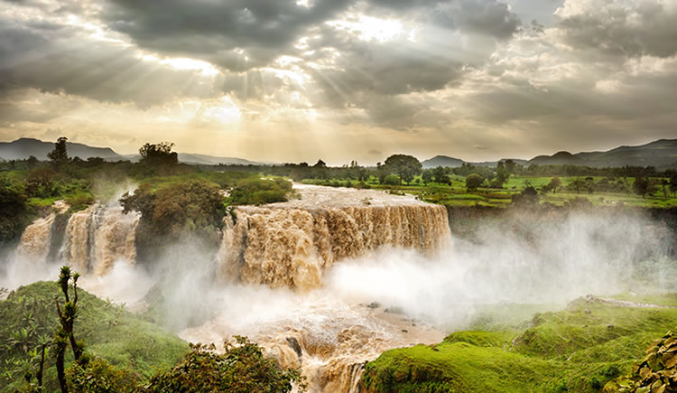
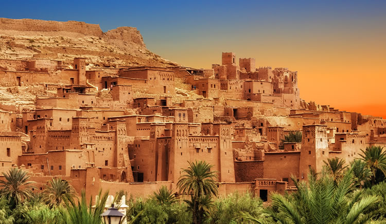
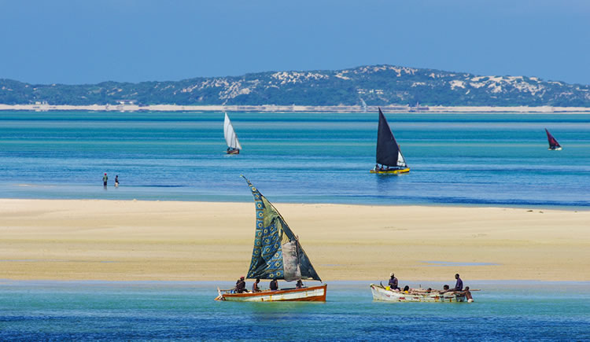

Turismo na África
Sugestões de lugares para conhecer no continente Africano
A Etiópia é o segundo país com a maior população na África, com mais de 91 milhões de habitantes em sua última estimativa. Não há uma língua oficial por lei, mas o amárico é considerado como língua de trabalho, usada com mais frequência comercialmente. Como moeda, usa-se o birr etíope.(Etiópia)

O Reino de Marrocos, como é conhecido oficialmente, é uma monarquia constitucional que fica no Norte da África, com aproximadamente 34 milhões de habitantes. As línguas oficiais são o árabe e um conjunto de línguas berberes, sendo que o árabe possui uma adesão cada vez maior. Sua moeda oficial é o dirham marroquino.(Marrocos)

Moçambique fica no nordeste da África. O país é banhado pelo Oceano Índico e possui quase 30 milhões de habitantes. Grande parte de sua economia é baseada na agricultura, que está crescendo juntamente com o seu potencial turístico.(Moçambique)
